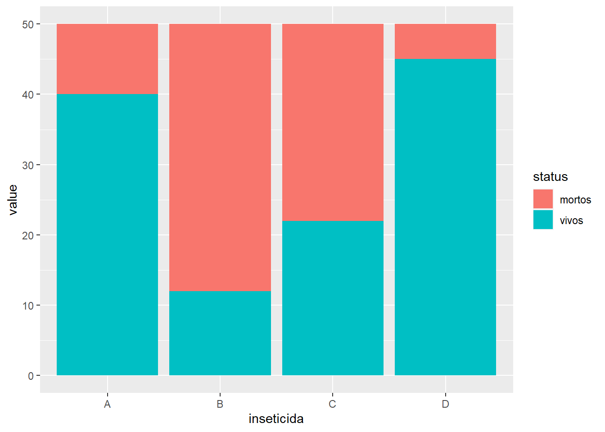

library(tidyverse)
library(readxl)
fungicida_campo <- read_excel("dados-diversos.xlsx",
"fungicida_campo")Aula6
Scatter Plot
Gráficos criados para 2 respostas relacionadas. Procura-se a resposta de qual o tipo de relação entre essas variáveis. Primeiro aplica a variável x e depois a y. Pode atribuir os dados de uma aba especifica do excel, usa-se o nome da aba e após isso a função read_excel seguido do o nome do arquivo excel entre aspas (endereço) e logo após insere a vírgula e o nome da aba dos dados (também pode ser usado o número da aba de dados).
O data frame deve ter o mesmo nome da aba quando for ser atribuido. Depois, plota-se os dados.Define-se o eixo x e depois o o eixo y. Usa-se o stat_summary para plotar a média de forma simples.
fungicida_campo |>
ggplot(aes(trat, sev))+
geom_jitter(width = 0.1,
color = "gray60")+
stat_summary(fun = mean,
color = "red")Para plotar a média de forma rápida e não precisar do by_summurise = mean_se.
fungicida_campo |>
ggplot(aes(trat, sev))+
geom_jitter(width = 0.1,
color = "gray60")+
stat_summary(fun.data = mean_se,
color = "red")Mudando o eixo x para yld, um das variáveis do banco de dados fungicida_campo. Se inserir a função alpha dentro da função geom_point, os pontos ficam mais transparentes.
library(ggthemes)
fungicida_campo |>
ggplot(aes(sev, yld,
color = trat))+
geom_point(size = 3)+
scale_color_colorblind()Para criar uma linha de tendência, usa-se a função geom_smooth. Para retirar o erro, usa-se a função se = FALSE e linetype. Method lm ajusta os dados a função linear.
fungicida_campo |>
ggplot(aes(sev, yld))+
geom_point(size = 3)+
scale_color_colorblind()+
geom_smooth(method = "lm",
se = FALSE,
color = "black",
linetype = "solid",
size = 2)
Experimento fatorial
Mudando o subconjunto de dados para milho: Ver a variação da produtividade dos hibridos de milho em função dos métodos de inoculação.
milho <- read_excel("dados-diversos.xlsx", "milho")
milho |>
ggplot(aes(hybrid, yield, color = method))+
geom_jitter(size = 2)+
facet_wrap(~hybrid)
#ou, para ver qual hibrido dá mais doença:
milho |>
ggplot(aes(method, index, color = method))+
geom_jitter(size = 2)+
facet_wrap(~hybrid)Trabalhando com 1 variável continua
Usanso produtividade: No histograma, tem-se os valores organizados em classe. Qual o padrão de distribuição dos pontos? Para mudar a cor da dos blocos, usa-se fill =.
p_yield <- milho |>
ggplot(aes(x = yield))+
geom_histogram(bins = 10, color = "black", fill = "green")Mudando de yield para index:
p_index <- milho |>
ggplot(aes(x = index))+
geom_histogram(bins = 10, color = "black", fill = "blue")Combinando gráficos com patchowork: deve-se primeiro definir um nome para cada gráfico
library(patchwork)
(p_yield + p_index)+
plot_annotation(tag_levels = "A")ggsave("figs/histograms.png", bg = "white")Gráfico de densidade
Para fazer um gráfico de densidade:
milho |>
ggplot(aes(x = index))+
geom_density()Formato largo para longo
Testando um novo subconjunto de dados: criou-se um gráfico de colunas, onde, no x tem-se inseticida e y é o status.
insect <- read_excel("dados-diversos.xlsx", "mortalidade")
insect |>
pivot_longer(2:3,
names_to = "status",
values_to = "value") |>
ggplot(aes(inseticida, value, fill = status))+
geom_col()